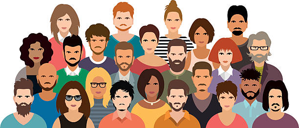
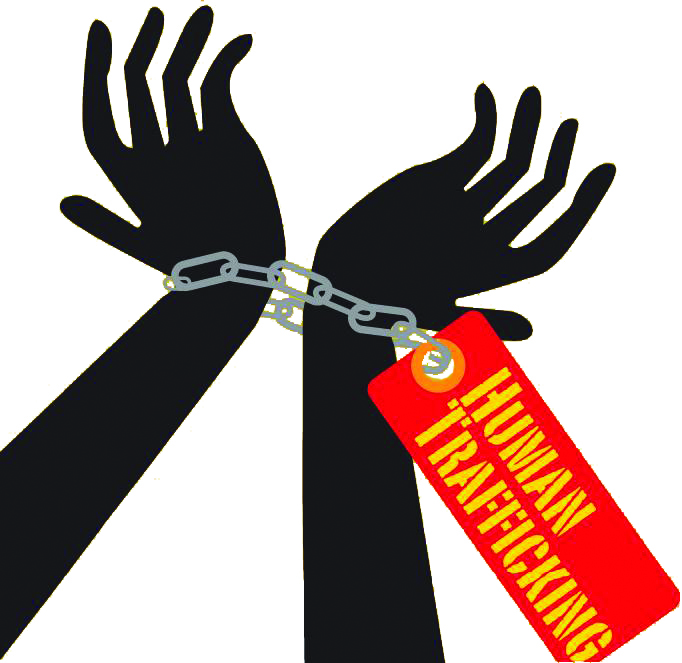
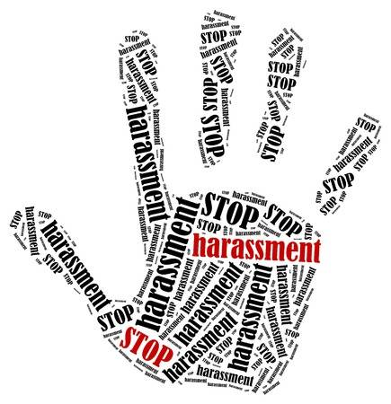

CRIMES AGAINST INDIVIDUALS
Home || Crimes against Individuals || Crimes against Property || Crime against Businesses || Crimes against Government || Future Transformation || Reference List|| About Creator

Three types of crimes against individuals include:
- Human Trafficking
- Identity Theft
- Harassment
Human Trafficking
Definition of human trafficking according to Merriam-Webster Dictionary:
organized criminal activity in which human beings are treated as possessions to be controlled
and exploited (by being forced into prostitution or involuntary labor).
Examples of human trafficking crimes in the past with the absence of technology
Human trafficking in the form of slavery was a major issue in the past.
Rahman (2011) defines contemporary slavery as a "social and economic relationship in which a person is controlled through violence or paid nothing,
and economically exploited." In the old form of slavery, Africans were specifically transported to the New World based on their race and specific
capabilities.

How have technology evolved the way human trafficking is committed?
Traffickers use social media, websites, and anonymizing apps and networks to contact and recruit their victims,
post online advertisements of the services that can be purchased from their victims, and communicate easily and
anonymously with buyers and conspirators within their trafficking rings (Sadwick, 2016)
What are actions/responses that may mitigate the effect of technology on human trafficking ?
The Spotlight tool which was introduced by Thorn: Digital Defenders in 2014. Spotlight is available to law enforcement across the nation and is
designed to combine data from online commercial sex advertisements. Law enforcement agencies using Spotlight have seen a 43% reduction in their
investigation time (Sadwick, 2016).
How can child sex trafficking be mitigated with the use of technology?
Child sex trafficking is a form of human trafficking that can be mitigated by using Microsoft's PhotoDNA which aids in identifying images of
children who are sexually exploited online (Sadwick, 2016).
Identity Theft
Definition of identity theft according to Collins Dictionary:
Identity theft is the crime of getting personal information about another person without their knowledge, for example in order to gain access to their bank account.
Examples of identity theft crimes in the past with the absence of technology
Long before the emergence of the Internet, identity thieves stole people's identities through dumpster diving by searching for personal
information such as social security and bank account numbers in the trash left outside people's homes (Manap, Rahim & Taji, 2015).

How have technology evolved the way identity theft is committed?
Through the use of phishing which is a computer trick that sends spam messages, by email or other means, to the victim in order to obtain
data and financial information of a person for criminal purposes (Sinca, 2015).
What are actions/responses that may mitigate the effect of technology on identity theft ?
You should never share personal or financially sensitive information over the Internet and also use a firewall or antivirus software for extra protection.
How can financial identity theft be mitigated with the use of technology?
Financial identity theft occurs when personal information about a person is stolen in order to withdraw funds from bank accounts.
This can be mitigated using online credit monitoring technology which tracks credit history to detect any suspicious activity or changes.
Harassment
Definition of Harassment according to Collins Dictionary:
Harassment is behaviour which is intended to trouble or annoy someone, for example repeated attacks on them or attempts to cause them problems.
Examples of Harassment crimes in the past with the absence of technology
In 1975, Lois Jensen was one of the first women hired to work in Eveleth iron mine in northern Minnesota and one of the first women to win a
sex discrimation case. She and her female co-workers suffered harassment from the men who still believed that women should stay at home.
The behavior of the men escalated into stalking, assault, and threats of rape ("Real Women of North Country," 2006).

How have technology evolved the way harassment is committed?
Cyber-harassment include unwanted behavior that demeans, threatens, or offends a victim and results in a hostile environment for him or her.
Cyber-harassers target their victims through chat rooms, message boards, discussion forums, social media and emails (Milhorn, 2007).
What are actions/responses that may mitigate the effect of technology on harassment ?
Avoid posting personal data on your social media accounts and be cautious about emails, phone calls and text messages that ask for your personal information.
How can sexual harassment be mitigated with the use of technology?
Sexual harassment in the workplace is a form of harassment that can be mitigated using technology. STOPit is an app that allows employees to anonymously
report harassment, bullying, unethical business practices, and more ("Startups Working on Technological Solutions to Combat Harassment,"2017).